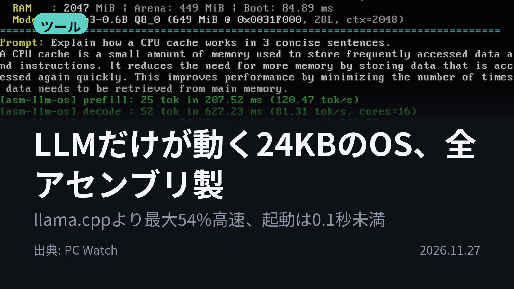
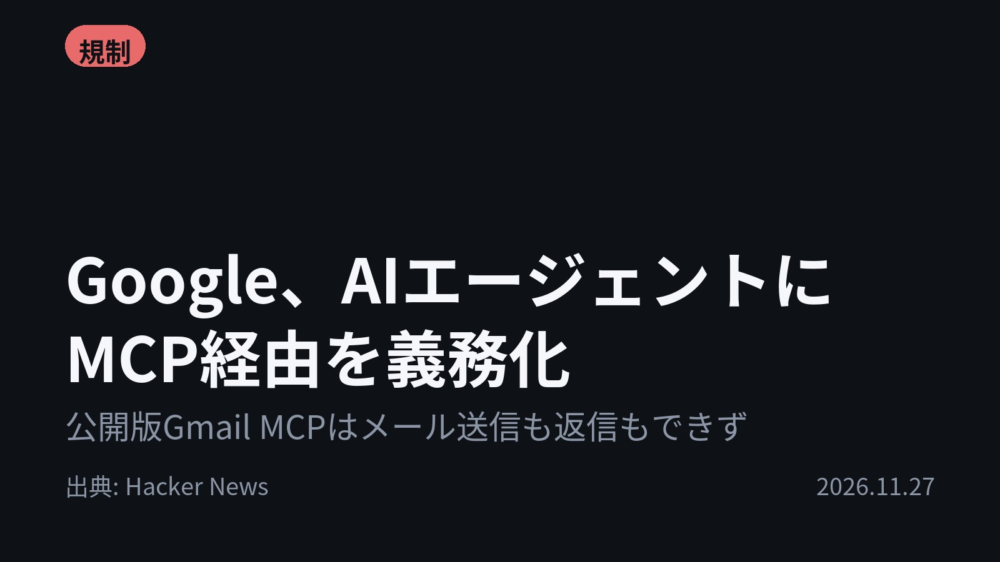
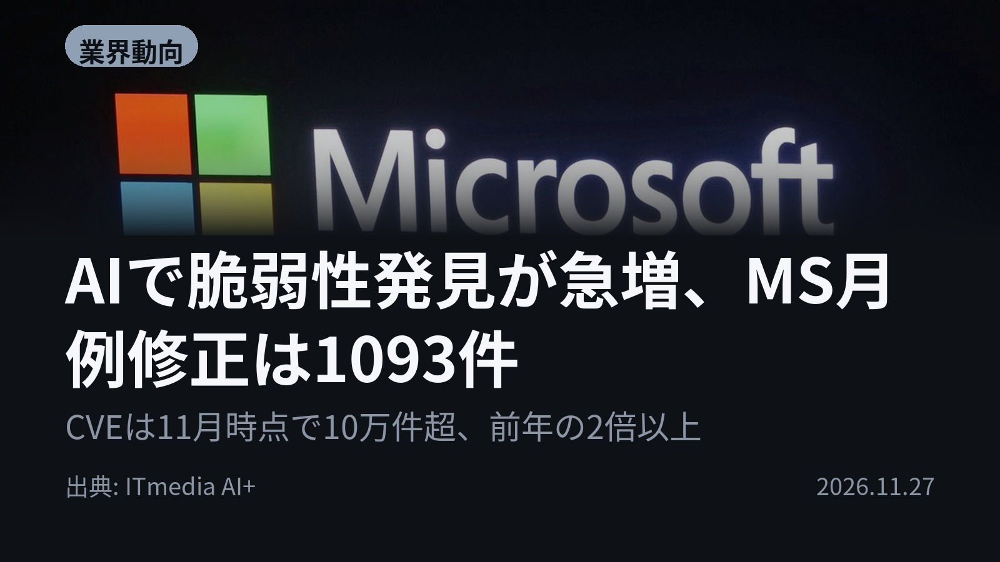
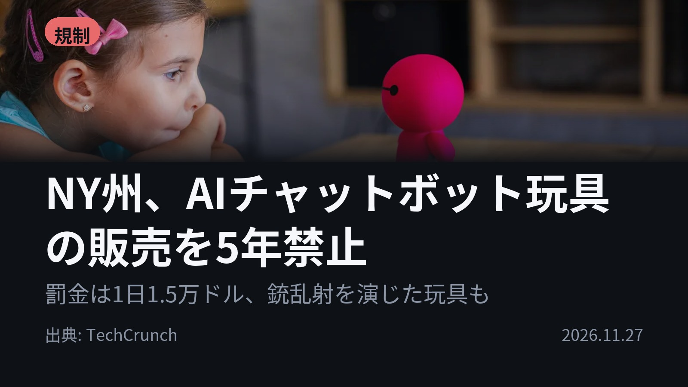
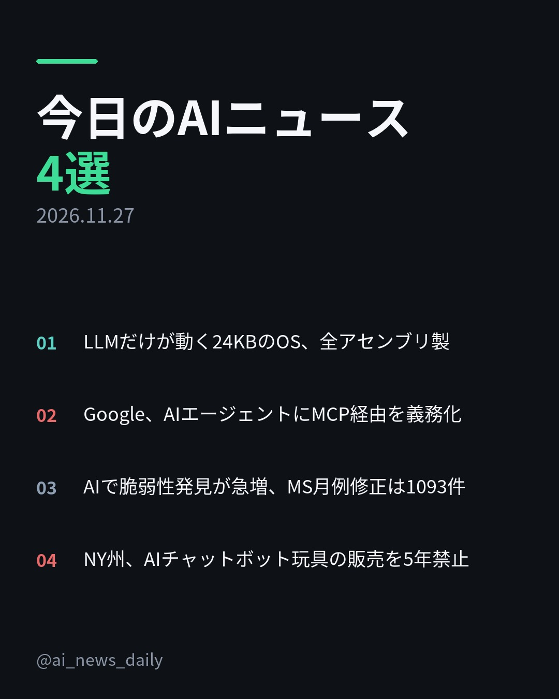
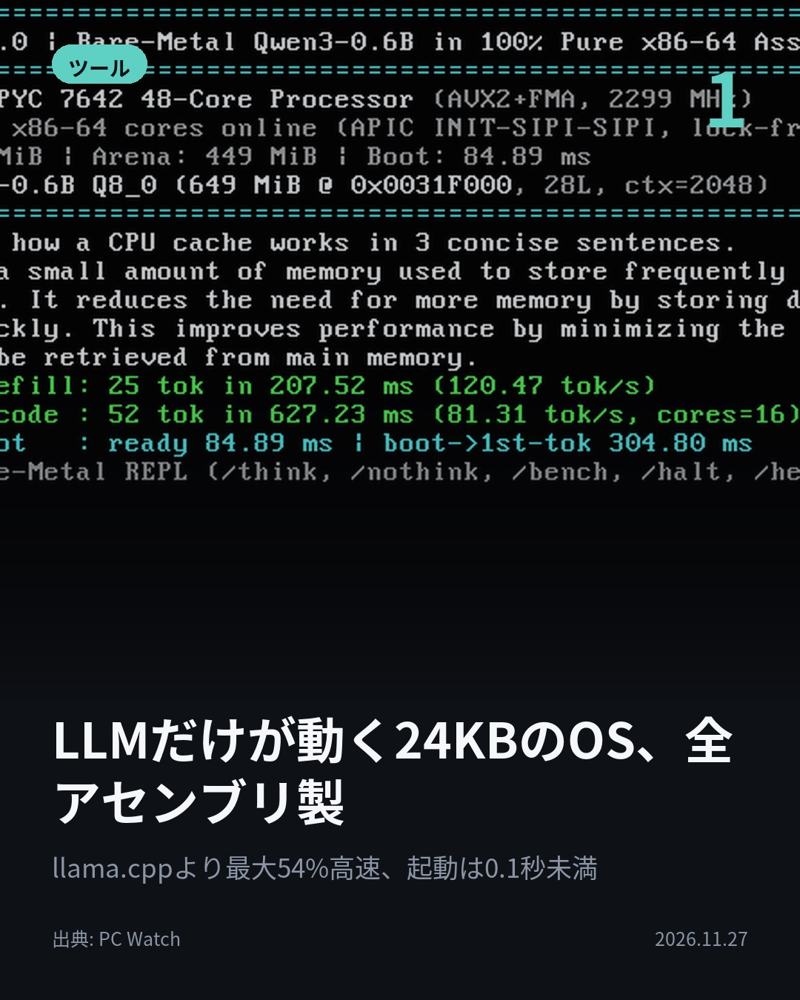
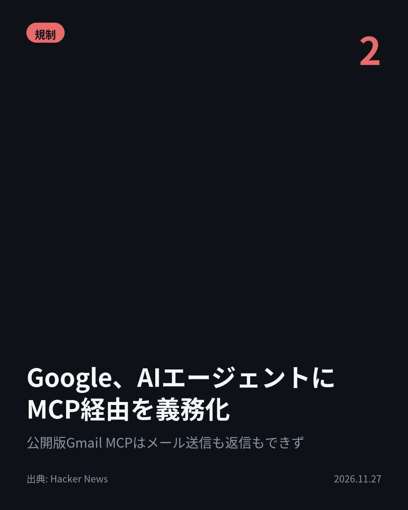
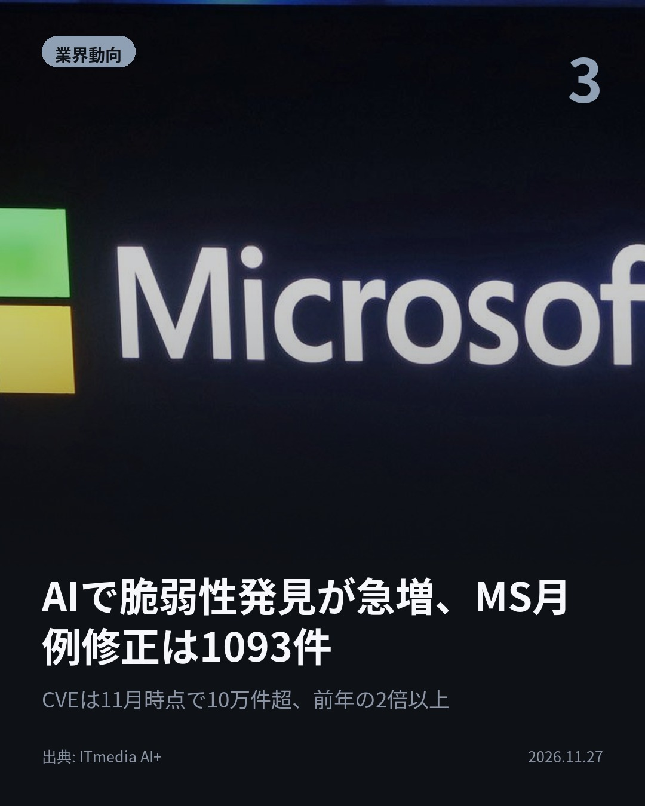
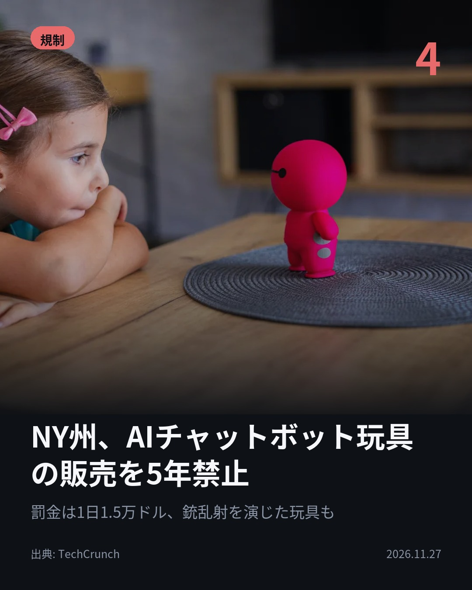

今日のAIニュース 下書き
2026-11-27 生成 11/27 08:56
⚠ ファクト照合で要確認の項目があります。
各ニュースの警告を確認してから投稿してください。
X（4投稿）
LLMだけが動く24KBのOS、全アセンブリ製
原題: LLMが動くだけのOS。24KBの全アセンブリ製Qwen3-0.6B専用

24KBのOSで、LLMがLinux上のllama.cppより最大54%速く動いた。 開発者が全てx86-64アセンブリで書いたQwen3-0.6B専用OS。 カーネル起動からプロンプト表示まで74〜94ms。 #AI #Qwen （出典: PC Watch）
重み 187 / 280（見た目 126字）
要確認:
［固有名詞］Watch — この語が本文に見つかりません

Google、AIエージェントにMCP経由を義務化
原題: Google Will Make AI Agents Use Its MCP Servers. The Gmail One Can't Send Email

提携先のAIはメールを送れて、独立系開発者のAIは下書きまで。 Googleは2027年2月1日から、AIエージェントのWorkspace接続をMCPサーバー経由に限定。 公開版Gmail MCPは送信も返信も不可。 #AI #Google （出典: Hacker News）
重み 209 / 280（見た目 134字）
要確認:
［数値］2月 — この数値の根拠が本文に見つかりません
［固有名詞］エージェント — この語が本文に見つかりません
［固有名詞］サーバー — この語が本文に見つかりません
［固有名詞］ベクトル — この語が本文に見つかりません
［固有名詞］Hacker — この語が本文に見つかりません
［固有名詞］News — この語が本文に見つかりません

AIで脆弱性発見が急増、MS月例修正は1093件
原題: 脆弱性の発見数、1年で2倍超 Microsoft製品も月100件から1000件超に……AIで一変

Microsoftの月例修正、なぜ1093件に膨らんだのか。 1年前は月100件前後。同社はAIの助けで大量に発見・修正できたと説明。 CVEは11月13日時点で10万件を突破し、2025年の2倍以上。 #AI #セキュリティ （出典: ITmedia AI+）
重み 207 / 280（見た目 127字）
要確認:
［数値］2025年 — この数値の根拠が本文に見つかりません

NY州、AIチャットボット玩具の販売を5年禁止
原題: Want to buy your kid an AI toy this Christmas? Not in New York

子どもに「秘密を守る」と約束するAI玩具が、調査で見つかった。 NY州のホークル知事が、AIチャットボット内蔵玩具の製造・販売を5年間禁じる法案に署名。 カリフォルニアに次ぐ2州目。罰金は1日1万5000ドル。 #AI #AI規制 （出典: TechCrunch）
重み 227 / 280（見た目 128字）
要確認:
［数値］5年 — この数値の根拠が本文に見つかりません
［数値］1日 — この数値の根拠が本文に見つかりません
［数値］1万 — この数値の根拠が本文に見つかりません
［数値］5000ドル — この数値の根拠が本文に見つかりません
［固有名詞］ホークル — この語が本文に見つかりません
［固有名詞］チャットボット — この語が本文に見つかりません
［固有名詞］カリフォルニア — この語が本文に見つかりません
［固有名詞］ロールプレイ — この語が本文に見つかりません

Instagram（カルーセル 6枚）


1. 表紙


2. ニュース


3. ニュース


4. ニュース


5. ニュース

6. CTA
Microsoftが11月に修正した脆弱性は1093件。1年前は月100件前後でした。 24KBのLLM専用OS、GoogleのAIエージェント新ルール、NY州のAI玩具禁止もまとめます。 1. Alexey Fateev氏は、C/C++もRustもlibcも使わず、OSまで含めてx86-64アセンブリで書きました。AMD EPYC 7642での計測では、デコード速度がllama.cppの1.31〜1.54倍。ドライバはシリアル、VGA、キーボードなど最小限で、OSとモデルはすべてRAM上で動きます(PC Watch) 2. 対象は、Gmail・Drive・Calendarなど8つのWorkspace MCPサーバーです。公開版のGmailでは検索、閲覧、下書き作成はできますが、作成した下書きを直せません。Workspaceのデータから作ったベクトル埋め込みなどは、保持期間を30日に制限される可能性もあります(Hacker News) 3. ただし、実際に悪用が確認されたのはごく一部です。VulnCheckのKEV（悪用確認済み脆弱性）リストでは1425件、CISAのKEVリストでは298件でした（11月18日時点）。CrowdStrikeによると、PoC（検証用コード）を使った攻撃の88%は、コード公開から48時間以内に起きていました(ITmedia AI+) 4. Common Sense Mediaが人気のAI玩具5種を調べました。利用者を愛していると主張したり、親の決めた就寝ルールを破る手助けをしたりする問題が見つかっています。BubblePal Pandaは、求められると銃乱射のロールプレイを詳細に演じました。法律は署名から90日後に施行されます(TechCrunch) 今日の4本のうち2本は、AIの使い方にルールで線を引く話でした。 毎朝4本、AIニュースを見出しの先まで要約しています。見逃したくない方はフォローを、あとで読み返すなら保存をどうぞ。 #AI #生成AI #人工知能 #テクノロジー #AIニュース #ArtificialIntelligence #TechNews #LLM #AIエージェント #AI活用 #サイバーセキュリティ #Cybersecurity #AI規制 #Qwen #llamacpp #アセンブリ #GoogleWorkspace #MCP #Microsoft #脆弱性 #CVE #AI玩具
1042字（Instagram上限 2,200字）
この日の選定理由
LLMだけが動く24KBのOS、全アセンブリ製
OSの余計な機能を削るだけで、推論が大幅に速くなることを個人が実証した。小型モデルを専用機で動かす方向に、具体的な可能性を示している。
Google、AIエージェントにMCP経由を義務化
2027年2月から、独立系の開発者が作るメールAIは下書きしか作れなくなる恐れがある。一方で大手パートナーは送信できるため、プラットフォームがAIエージェントの勝者を選ぶ構図になる。
AIで脆弱性発見が急増、MS月例修正は1093件
AIで脆弱性の発見も攻撃も加速し、パッチ公開から数分で攻撃が始まる例も出ている。すべてを直すのではなく、実際に悪用されている脆弱性を優先する対応が欠かせなくなっている。
NY州、AIチャットボット玩具の販売を5年禁止
子ども向けAI製品への規制が、カリフォルニアに続いて州単位で広がっている。調査では、玩具が「秘密を守る」と約束するなど、安全面の問題が具体的に確認された。